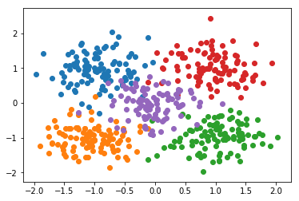
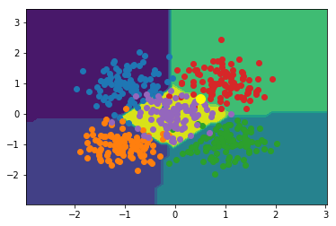

01 Computer Vision
Build an Autonomous Car with Python

import numpy as np
import matplotlib.pyplot as plt
from sklearn import datasets
import keras
from keras.models import Sequential
from keras.layers import Dense
from keras.optimizers import Adam
from keras.utils.np_utils import to_categorical
n_pts = 500
centers = [[-1, 1], [-1, -1], [1, -1], [1, 1], [0, 0]]
X, y = datasets.make_blobs(n_samples=n_pts, random_state=123, centers=centers, cluster_std=0.4)
plt.scatter(X[y==0, 0],X[y==0, 1])
plt.scatter(X[y==1, 0],X[y==1, 1])
plt.scatter(X[y==2, 0],X[y==2, 1])
plt.scatter(X[y==3, 0],X[y==3, 1])
plt.scatter(X[y==4, 0],X[y==4, 1])
<matplotlib.collections.PathCollection at 0x1a33248400>

print(y)
y_cat = to_categorical(y,5)
print(y_cat)
[3 3 4 0 2 1 1 4 4 4 3 2 1 0 2 4 4 4 3 0 3 0 3 4 1 3 1 0 4 2 3 1 0 4 1 0 4
0 4 0 1 3 3 0 3 1 3 4 0 4 0 2 3 0 2 4 4 0 3 4 1 3 0 4 2 1 1 2 3 2 3 2 1 1
3 2 4 2 2 3 0 2 4 3 2 1 3 3 3 3 1 1 4 2 4 4 1 2 4 1 4 2 2 3 4 1 1 3 3 2 1
3 1 0 1 0 4 4 4 3 1 3 3 3 1 4 4 0 2 0 1 1 0 4 0 1 1 4 4 0 4 3 4 4 2 4 0 0
0 4 2 0 4 1 0 2 2 1 3 0 1 2 2 4 4 1 3 2 3 3 3 2 2 2 4 0 1 1 0 1 4 4 3 2 3
2 3 1 0 3 4 2 1 0 0 0 4 3 0 4 2 2 3 1 0 4 4 1 2 1 3 1 4 4 0 1 4 2 4 0 4 0
1 2 3 0 1 0 3 3 4 3 4 0 0 1 1 3 0 4 1 4 2 1 2 4 4 3 3 1 1 1 4 1 1 1 4 3 1
0 0 2 2 2 3 2 3 4 2 3 3 1 1 0 4 0 3 0 0 0 3 2 2 1 4 2 0 0 2 2 1 3 3 1 3 0
0 1 4 2 2 2 1 0 0 1 0 0 1 2 4 2 4 2 1 3 0 0 1 4 1 2 4 4 4 3 4 1 2 3 1 3 1
0 0 2 4 1 3 1 1 2 1 4 3 1 2 3 2 0 4 1 4 0 2 2 0 1 2 2 4 4 0 4 1 3 3 2 2 0
4 3 3 1 2 2 4 3 0 3 3 3 3 0 1 4 4 4 0 3 3 2 4 0 4 0 0 4 2 2 2 3 0 2 0 0 1
2 3 0 0 2 4 2 3 0 3 0 1 0 4 1 0 0 1 3 1 4 0 2 1 1 3 2 3 2 2 2 3 1 0 0 0 1
3 4 2 1 0 2 1 4 3 3 4 0 0 2 2 0 0 2 2 3 4 3 2 2 2 2 0 1 3 0 2 1 2 0 2 3 4
3 1 4 3 3 0 2 4 0 4 1 3 2 1 3 0 1 2 1]
[[0. 0. 0. 1. 0.]
[0. 0. 0. 1. 0.]
[0. 0. 0. 0. 1.]
...
[0. 1. 0. 0. 0.]
[0. 0. 1. 0. 0.]
[0. 1. 0. 0. 0.]]
model = Sequential()
model.add(Dense(units=5, input_shape=(2,), activation='softmax'))
model.compile(Adam(0.1), loss='categorical_crossentropy', metrics=['accuracy'])
model.fit(x=X, y=y_cat, verbose=1, batch_size=50, epochs=100)
Epoch 1/100
500/500 [==============================] - 1s 1ms/step - loss: 1.2781 - acc: 0.4940
Epoch 2/100
500/500 [==============================] - 0s 49us/step - loss: 0.6296 - acc: 0.8520
Epoch 3/100
500/500 [==============================] - 0s 47us/step - loss: 0.4182 - acc: 0.9120
Epoch 4/100
500/500 [==============================] - 0s 65us/step - loss: 0.3323 - acc: 0.9440
Epoch 5/100
500/500 [==============================] - 0s 57us/step - loss: 0.2890 - acc: 0.9420
Epoch 6/100
500/500 [==============================] - 0s 50us/step - loss: 0.2626 - acc: 0.9460
Epoch 7/100
500/500 [==============================] - 0s 38us/step - loss: 0.2451 - acc: 0.9440
Epoch 8/100
500/500 [==============================] - 0s 51us/step - loss: 0.2323 - acc: 0.9480
Epoch 9/100
500/500 [==============================] - 0s 40us/step - loss: 0.2217 - acc: 0.9500
Epoch 10/100
500/500 [==============================] - 0s 150us/step - loss: 0.2145 - acc: 0.9500
Epoch 11/100
500/500 [==============================] - 0s 76us/step - loss: 0.2062 - acc: 0.9460
Epoch 12/100
500/500 [==============================] - 0s 72us/step - loss: 0.2001 - acc: 0.9440
Epoch 13/100
500/500 [==============================] - 0s 65us/step - loss: 0.1956 - acc: 0.9500
Epoch 14/100
500/500 [==============================] - 0s 47us/step - loss: 0.1914 - acc: 0.9500
Epoch 15/100
500/500 [==============================] - 0s 85us/step - loss: 0.1877 - acc: 0.9480
Epoch 16/100
500/500 [==============================] - 0s 64us/step - loss: 0.1857 - acc: 0.9460
Epoch 17/100
500/500 [==============================] - 0s 67us/step - loss: 0.1816 - acc: 0.9480
Epoch 18/100
500/500 [==============================] - 0s 60us/step - loss: 0.1811 - acc: 0.9420
Epoch 19/100
500/500 [==============================] - 0s 69us/step - loss: 0.1766 - acc: 0.9500
Epoch 20/100
500/500 [==============================] - 0s 79us/step - loss: 0.1767 - acc: 0.9460
Epoch 21/100
500/500 [==============================] - 0s 53us/step - loss: 0.1721 - acc: 0.9500
Epoch 22/100
500/500 [==============================] - 0s 57us/step - loss: 0.1725 - acc: 0.9460
Epoch 23/100
500/500 [==============================] - 0s 54us/step - loss: 0.1688 - acc: 0.9500
Epoch 24/100
500/500 [==============================] - 0s 69us/step - loss: 0.1693 - acc: 0.9440
Epoch 25/100
500/500 [==============================] - 0s 59us/step - loss: 0.1665 - acc: 0.9480
Epoch 26/100
500/500 [==============================] - 0s 91us/step - loss: 0.1666 - acc: 0.9460
Epoch 27/100
500/500 [==============================] - 0s 63us/step - loss: 0.1650 - acc: 0.9500
Epoch 28/100
500/500 [==============================] - 0s 68us/step - loss: 0.1637 - acc: 0.9520
Epoch 29/100
500/500 [==============================] - 0s 61us/step - loss: 0.1630 - acc: 0.9520
Epoch 30/100
500/500 [==============================] - 0s 76us/step - loss: 0.1634 - acc: 0.9440
Epoch 31/100
500/500 [==============================] - 0s 48us/step - loss: 0.1607 - acc: 0.9500
Epoch 32/100
500/500 [==============================] - 0s 85us/step - loss: 0.1613 - acc: 0.9480
Epoch 33/100
500/500 [==============================] - 0s 65us/step - loss: 0.1604 - acc: 0.9500
Epoch 34/100
500/500 [==============================] - 0s 58us/step - loss: 0.1604 - acc: 0.9480
Epoch 35/100
500/500 [==============================] - 0s 75us/step - loss: 0.1590 - acc: 0.9500
Epoch 36/100
500/500 [==============================] - 0s 52us/step - loss: 0.1590 - acc: 0.9500
Epoch 37/100
500/500 [==============================] - 0s 59us/step - loss: 0.1582 - acc: 0.9500
Epoch 38/100
500/500 [==============================] - 0s 60us/step - loss: 0.1575 - acc: 0.9500
Epoch 39/100
500/500 [==============================] - 0s 62us/step - loss: 0.1592 - acc: 0.9500
Epoch 40/100
500/500 [==============================] - 0s 58us/step - loss: 0.1581 - acc: 0.9460
Epoch 41/100
500/500 [==============================] - 0s 46us/step - loss: 0.1571 - acc: 0.9520
Epoch 42/100
500/500 [==============================] - 0s 55us/step - loss: 0.1562 - acc: 0.9520
Epoch 43/100
500/500 [==============================] - 0s 51us/step - loss: 0.1557 - acc: 0.9480
Epoch 44/100
500/500 [==============================] - 0s 57us/step - loss: 0.1567 - acc: 0.9500
Epoch 45/100
500/500 [==============================] - 0s 55us/step - loss: 0.1556 - acc: 0.9520
Epoch 46/100
500/500 [==============================] - 0s 45us/step - loss: 0.1571 - acc: 0.9480
Epoch 47/100
500/500 [==============================] - 0s 45us/step - loss: 0.1561 - acc: 0.9520
Epoch 48/100
500/500 [==============================] - 0s 42us/step - loss: 0.1555 - acc: 0.9440
Epoch 49/100
500/500 [==============================] - 0s 47us/step - loss: 0.1548 - acc: 0.9440
Epoch 50/100
500/500 [==============================] - 0s 49us/step - loss: 0.1543 - acc: 0.9440
Epoch 51/100
500/500 [==============================] - 0s 40us/step - loss: 0.1537 - acc: 0.9520
Epoch 52/100
500/500 [==============================] - 0s 45us/step - loss: 0.1539 - acc: 0.9500
Epoch 53/100
500/500 [==============================] - 0s 43us/step - loss: 0.1531 - acc: 0.9520
Epoch 54/100
500/500 [==============================] - 0s 47us/step - loss: 0.1550 - acc: 0.9460
Epoch 55/100
500/500 [==============================] - 0s 48us/step - loss: 0.1524 - acc: 0.9520
Epoch 56/100
500/500 [==============================] - 0s 36us/step - loss: 0.1541 - acc: 0.9520
Epoch 57/100
500/500 [==============================] - 0s 49us/step - loss: 0.1538 - acc: 0.9480
Epoch 58/100
500/500 [==============================] - 0s 43us/step - loss: 0.1530 - acc: 0.9480
Epoch 59/100
500/500 [==============================] - 0s 51us/step - loss: 0.1533 - acc: 0.9520
Epoch 60/100
500/500 [==============================] - 0s 38us/step - loss: 0.1528 - acc: 0.9520
Epoch 61/100
500/500 [==============================] - 0s 46us/step - loss: 0.1522 - acc: 0.9500
Epoch 62/100
500/500 [==============================] - 0s 45us/step - loss: 0.1526 - acc: 0.9500
Epoch 63/100
500/500 [==============================] - 0s 51us/step - loss: 0.1527 - acc: 0.9520
Epoch 64/100
500/500 [==============================] - 0s 52us/step - loss: 0.1522 - acc: 0.9500
Epoch 65/100
500/500 [==============================] - 0s 51us/step - loss: 0.1541 - acc: 0.9500
Epoch 66/100
500/500 [==============================] - 0s 41us/step - loss: 0.1521 - acc: 0.9500
Epoch 67/100
500/500 [==============================] - 0s 48us/step - loss: 0.1527 - acc: 0.9520
Epoch 68/100
500/500 [==============================] - 0s 53us/step - loss: 0.1533 - acc: 0.9500
Epoch 69/100
500/500 [==============================] - 0s 48us/step - loss: 0.1540 - acc: 0.9520
Epoch 70/100
500/500 [==============================] - 0s 46us/step - loss: 0.1542 - acc: 0.9460
Epoch 71/100
500/500 [==============================] - 0s 42us/step - loss: 0.1524 - acc: 0.9520
Epoch 72/100
500/500 [==============================] - 0s 42us/step - loss: 0.1535 - acc: 0.9500
Epoch 73/100
500/500 [==============================] - 0s 49us/step - loss: 0.1527 - acc: 0.9500
Epoch 74/100
500/500 [==============================] - 0s 47us/step - loss: 0.1518 - acc: 0.9480
Epoch 75/100
500/500 [==============================] - 0s 45us/step - loss: 0.1533 - acc: 0.9480
Epoch 76/100
500/500 [==============================] - 0s 39us/step - loss: 0.1516 - acc: 0.9500
Epoch 77/100
500/500 [==============================] - 0s 44us/step - loss: 0.1531 - acc: 0.9460
Epoch 78/100
500/500 [==============================] - 0s 45us/step - loss: 0.1555 - acc: 0.9480
Epoch 79/100
500/500 [==============================] - 0s 54us/step - loss: 0.1534 - acc: 0.9480
Epoch 80/100
500/500 [==============================] - 0s 48us/step - loss: 0.1527 - acc: 0.9460
Epoch 81/100
500/500 [==============================] - 0s 59us/step - loss: 0.1532 - acc: 0.9480
Epoch 82/100
500/500 [==============================] - 0s 66us/step - loss: 0.1520 - acc: 0.9480
Epoch 83/100
500/500 [==============================] - 0s 53us/step - loss: 0.1517 - acc: 0.9520
Epoch 84/100
500/500 [==============================] - 0s 55us/step - loss: 0.1524 - acc: 0.9500
Epoch 85/100
500/500 [==============================] - 0s 65us/step - loss: 0.1504 - acc: 0.9520
Epoch 86/100
500/500 [==============================] - 0s 63us/step - loss: 0.1518 - acc: 0.9500
Epoch 87/100
500/500 [==============================] - 0s 53us/step - loss: 0.1524 - acc: 0.9480
Epoch 88/100
500/500 [==============================] - 0s 51us/step - loss: 0.1512 - acc: 0.9480
Epoch 89/100
500/500 [==============================] - 0s 57us/step - loss: 0.1524 - acc: 0.9520
Epoch 90/100
500/500 [==============================] - 0s 62us/step - loss: 0.1524 - acc: 0.9500
Epoch 91/100
500/500 [==============================] - 0s 58us/step - loss: 0.1522 - acc: 0.9520
Epoch 92/100
500/500 [==============================] - 0s 62us/step - loss: 0.1516 - acc: 0.9480
Epoch 93/100
500/500 [==============================] - 0s 53us/step - loss: 0.1525 - acc: 0.9480
Epoch 94/100
500/500 [==============================] - 0s 61us/step - loss: 0.1510 - acc: 0.9520
Epoch 95/100
500/500 [==============================] - 0s 57us/step - loss: 0.1525 - acc: 0.9520
Epoch 96/100
500/500 [==============================] - 0s 38us/step - loss: 0.1504 - acc: 0.9480
Epoch 97/100
500/500 [==============================] - 0s 55us/step - loss: 0.1511 - acc: 0.9500
Epoch 98/100
500/500 [==============================] - 0s 56us/step - loss: 0.1516 - acc: 0.9500
Epoch 99/100
500/500 [==============================] - 0s 46us/step - loss: 0.1503 - acc: 0.9500
Epoch 100/100
500/500 [==============================] - 0s 61us/step - loss: 0.1518 - acc: 0.9480
<keras.callbacks.History at 0x1a332f0940>
def plot_decision_boundary(X, y_cat, model):
x_span = np.linspace(min(X[:, 0]) - 1, max(X[:, 0]) + 1)
y_span = np.linspace(min(X[:, 1]) - 1, max(X[:, 1]) + 1)
xx, yy = np.meshgrid(x_span, y_span)
grid = np.c_[xx.ravel(), yy.ravel()]
pred_func = model.predict_classes(grid)
z = pred_func.reshape(xx.shape)
plt.contourf(xx, yy, z)
plot_decision_boundary(X, y_cat, model)
plt.scatter(X[y==0, 0],X[y==0, 1])
plt.scatter(X[y==1, 0],X[y==1, 1])
plt.scatter(X[y==2, 0],X[y==2, 1])
plt.scatter(X[y==3, 0],X[y==3, 1])
plt.scatter(X[y==4, 0],X[y==4, 1])
x = 0.5
y = 0.5
point = np.array([[x, y]])
predict = model.predict_classes(point)
plt.plot([x], [y], marker='o', markersize=10, color="yellow")
# plt.show()
print("Prediction is: ", predict)
Prediction is: [3]

Jian Zhang
Ph.D. Candidate
School of Electrical Engineering and Telecommunications
My research interests include autonomous robots, hybrid dynamical systems, machine learning and intelligent systems.